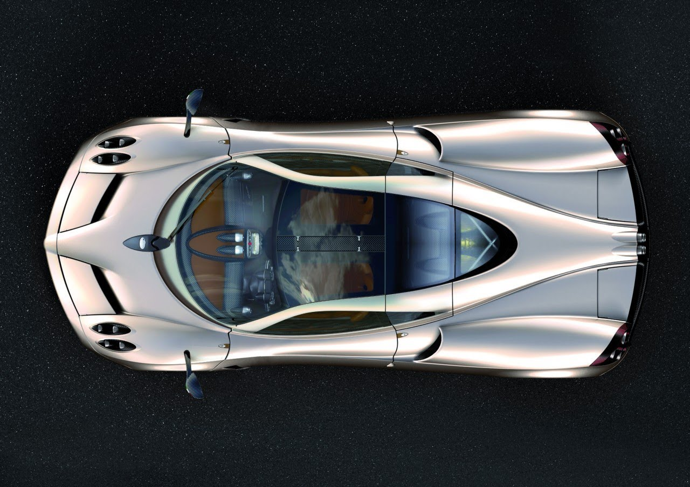

Pagani Huyara

Interiors
Introduction
The Pagani Huayra is an Italian mid-engined sports car produced by Pagani.Succeeding the company's previous offering, the Zonda, it had a base price of 850,000 euros. It is named after Huayra tata, a Quechua wind god.The Huayra was named "The Hypercar of the Year 2012" by Top Gear magazine and received a very positive review when tested by Richard Hammond on Top Gear. The Huayra was previously the fastest road car to go around the Top Gear Test Track, setting a time of 1:13.8, beating the previous record of 1:15.1 set by the Ariel Atom V8 in January 2011, and also placed above other hypercars such as the Aston Martin Vulcan, Bugatti Veyron 16.4, Bugatti Veyron 16.4 Super Sport, Ferrari Enzo Ferrari, Koenigsegg CCX, Lamborghini Sesto Elemento, and Pagani Zonda F. It is also unofficially faster around the track than the Ferrari LaFerrari. However, in June 2016, the Huayra was beaten by the McLaren 675LT that set a record of 1:13.7. On February 11, 2015 it was reported that the Pagani Huayra has been sold out. The Huayra was limited to just 100 units as part of Pagani's agreement with engine supplier Mercedes-AMG.Differnt Views
Front View
Top View
Rear View
Side View
Interiors
Interiors
Interiors
Pricing
Pagani Huayra. The Pagani Huayra is an Italian mid engined sports car produced by Pagani. Succeeding the company's previous offering, the Zonda,it had a base price of 850,000 Euros. It is named after Huayra tata,a Quechua wind god.Interiors
Engine
Mercedes-Benz's AMG division provides the engine of the Huayra which is hand-built. The 5,980 cc, twin-turbo, 60° AMG M158 V12, has been designed at the request of Pagani to reduce turbo lag and improve response, realized with smaller turbos, a different intercooler configuration and re-programmed ECU settings.Performance
The Huayra uses a twin-turbo, V12 engine developed by Mercedes-AMG specially for the Huayra. The Huayra's 6.0-litre engine, the M158, produces 730 PS (720 hp, 539 kW) and 811 lb·ft (1,100 N·m) of torque.Its top speed is about 383 km/h and it has a 0-60 acceleration time of 2.8 seconds. Using Pirelli tires, the Pagani Huayra is capable of withstanding 1.66 g of lateral acceleration at speeds of up to 230 mph (370 km/h). The Pagani Huayra uses a seven-speed sequential gearbox and a single disc clutch.The choice not to use a dual-clutch in an oil bath was due to the increase in weight of over 70 kg (154 lb), thus negating any advantage of the faster gear changes in a double clutch transmission.As a result, the entire transmission weighs 96 kg. The car is equipped with Brembo brake calipers, rotors and pads. The calipers have four pistons in front and four in the rear. The rotors are drilled carbon ceramic, 380 mm (15.0 in) in diameter and 34 mm (1.3 in) thick. Pagani Huayra has a power to weight ratio of 1.85 kg (4.08 lb) per horsepower.Interiors
Specifications
Manufacturer Pagani Automobili S.p.A. Production 2012 to present Assembly Modena, Italy Designer Horacio Pagani Class Sports Car (S) Engine 5980 cc Mercedes-AMG bi-turbo M158 V12 Transmission 7-speed sequential Max. power 700 horsepower Top speed 370 km/h 0 to 100 km/h (0 to 60 mph) 3.3 seconds Fuel Consumption 23 l/100 km
Back to top